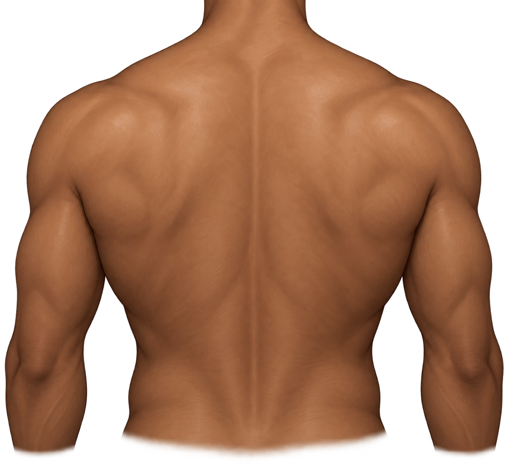

SIMULAÇÃO 2D / MISSÃO JOGÁVEL
TRAÇO ZERO.
Escolha uma arte, prepare o espaço digital, posicione o desenho e explore camadas de black & grey. Uma experiência visual fictícia do portfólio.
ESCOLHA A ARTE.
Duas composições originais para esta simulação. Depois, toque nos três módulos para montar a bancada de estudo.
ENCONTRE O CENTRO.
Posicione o desenho na área pontilhada das costas. Arraste a arte ou use os dois controles. Confirme quando estiver no alvo.
ALVO: CENTRO DA ÁREA MARCADA · USE AS SETAS DO TECLADO NOS CONTROLES
CONSTRUA CAMADAS.
Selecione cada efeito visual para revelar o desenho: linha, sombra em cinza e textura pontilhada. São escolhas gráficas do jogo, não instruções de aplicação.
FECHE O EMBLEMA.
Siga os pontos ao redor do desenho com mouse ou dedo. Para jogar pelo teclado, use “Próximo ponto”.
CONCEITO
FINALIZADO.
As duas artes e o corpo são imagens de demonstração criadas para este site. Nenhuma tatuagem real de Paulo é apresentada aqui.
ART / STUDY / REPEAT✳
